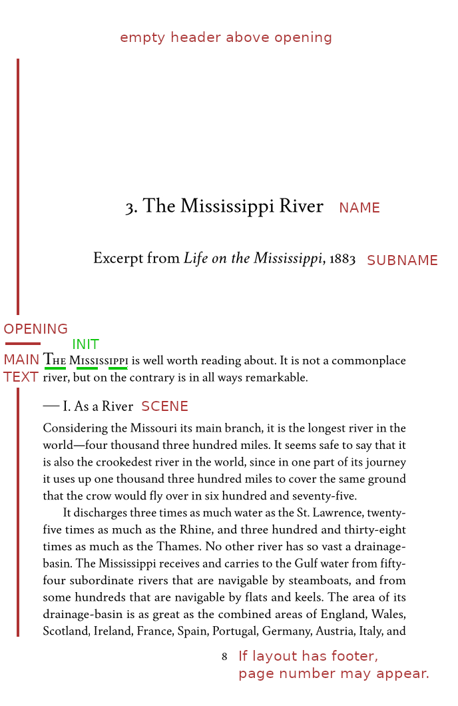

INDEX
INDEX topic:Preamble
topic:PreambleChapter Openings
This page is under development.
Each chapter begins with an opening, which visually indicates that something new will follow. The opening contains the chapter name, possibly a subname, and possibly other material. After the opening, main text begins lower on the same page.
Sometimes, an opening looks good for non-chapters. For example, if your book has an Acknowledgements page, you may choose to style it as a chapter.
The Opening Environment
Each new chapter, and some things that look like a chapter, start with
an opening. This is not invoked automatically. You must do it yourself.
That is, Novelette does NOT have a \chapter command.

In the above image:
- The opening is the area above start of main text. It is created by the
opening environment:
\begin{opening}through\end{opening} - No header appears above an opening. If the layout has a header, its space is reserved, but empty.
- If the layout has a footer, it will appear, unless you write
\thispagestyle{empty}within the opening. - Within the opening, you may place a name, using
\name{text of name}. Its style is globally set using\namestyle{setting}in Preamble. - You may also add a
\subname{text of subname}. Its style is globally set using\subnamestylein Preamble. - You cannot locally reset the style of
\nameor\subname. If you need something with its own style, use the\style[options]{text}command. - The
\name,\subname, and\stylecommands may only contain a single line. No wrapping, no paragraphs. If necessary, you may repeat the commands. - The opening may contain an image, using ordinary
\image. - You may write normal-size text (but not main text) in the opening, perhaps
if you wish to provide a short summary of what is to follow. In this case,
the
\blockindentenvironment may be useful. - The first line of main text, immediately following
\end{opening, is not indented. This is standard style. - The
\initcommand may be used to style the first letter, and first few words of main text. This is very attractive. - Vertical positioning of name and subname, and main text, is not automated.
You must manually add blank lines, where needed, using
\nullfor each blank line. - This particular book has scenes, using the
\scenecommand. Most books do not use scenes.
Here is the code for the above image. The styles used for name and subname were set in Preamble:
\begin{opening}
\null\null\null\null\null\null
\name{3. The Mississippi River}
\null\null
\subname{Excerpt from \ital{Life on the Mississippi}, 1883}
\null\null\null\null\null
\end{opening}
\init[-.1]{T}{he Mississippi} is well worth reading about. It is not a
commonplace river, but on the contrary is in all ways remarkable.
\scene{+I. As a River}
Considering the Missouri its main branch, etc.
 top
top